Portfólio Digital · Disciplina de Arte
Arte em Muitas Vozes
Um álbum de aprendizados, experiências e criações do grupo de Artes 2026 do IFSC Garopaba.
Explorar →Portfólio Digital · Disciplina de Arte
Um álbum de aprendizados, experiências e criações do grupo de Artes 2026 do IFSC Garopaba.
Explorar →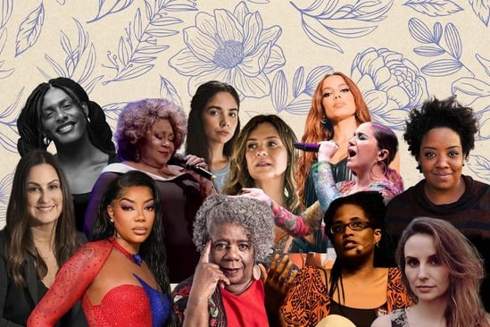
Mulheres na Arte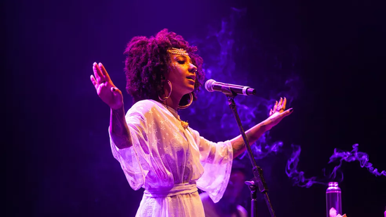
Slam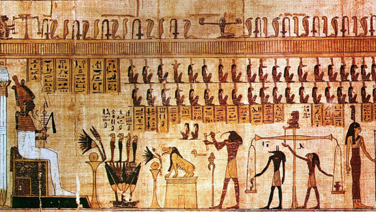
Egito Antigo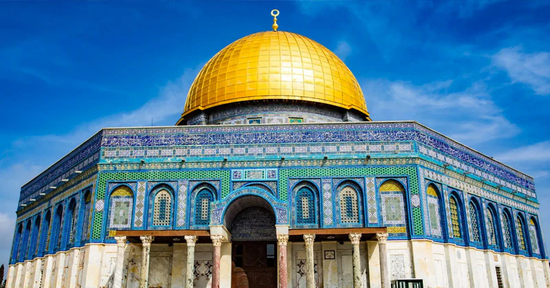
Cultura Árabe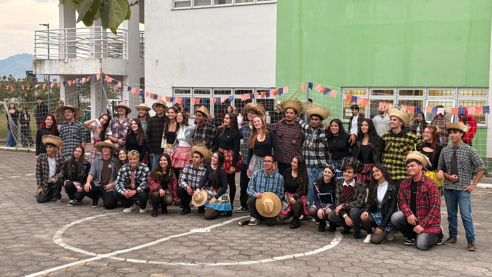
Folclore e Festa Junina Palestra ECOSURFAs aulas sobre Mulheres na Arte nos convidaram a olhar para além das obras e pensar no contexto por trás delas: quem tem voz, quem é reconhecido e quem acaba sendo deixado de lado ao longo da história.
Vimos também a Cartilha Violência contra a Mulher, produzida pelo Governo do Estado de São Paulo dentro do Programa de Enfrentamento da Violência contra Meninas e Mulheres na Rede Estadual de Educação, que traz dados, definições legais e ferramentas de apoio às vítimas.
Durante séculos, academias de arte oficiais na Europa proibiam a entrada de mulheres. Sem acesso ao ensino formal, ao uso de modelos vivos ou ao mercado de arte, artistas como Artemisia Gentileschi, Berthe Morisot e Tarsila do Amaral precisaram superar barreiras institucionais para se firmar.
No Brasil, o movimento feminista ganhou força especialmente a partir dos anos 1970, durante a ditadura militar. Artistas como Anna Maria Maiolino e Lygia Clark produziram obras que questionavam tanto o regime político quanto os papéis de gênero impostos pela sociedade.
"Por que não houve grandes artistas mulheres?" — Linda Nochlin, 1971. Essa pergunta histórica expôs as estruturas sociais, e não a falta de talento, como a causa do apagamento feminino na arte.
Hoje, movimentos como o Guerrilla Girls (coletivo anônimo de artistas ativistas fundado em 1985 em Nova York) continuam denunciando a sub-representação de mulheres e artistas de cor em museus e galerias ao redor do mundo.
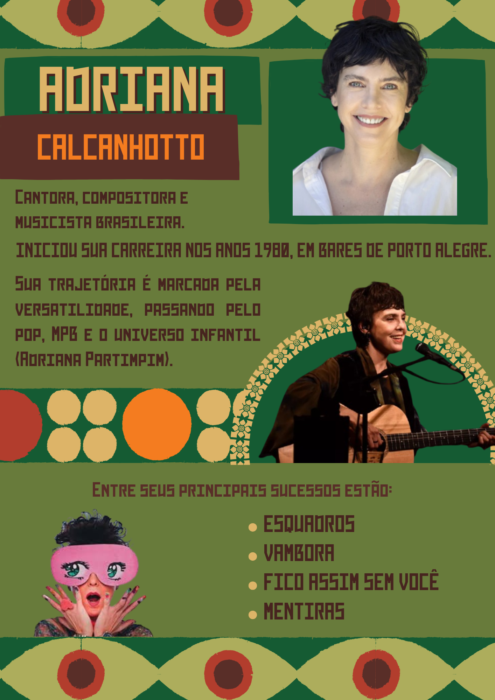
As aulas sobre Mulheres na Arte nos deixaram com uma visão mais crítica sobre o que escolhemos consumir, valorizar e reconhecer como arte. Percebemos que o apagamento de artistas femininas não foi um acidente histórico, mas o resultado de estruturas sociais que precisam ser ativamente questionadas.
A arte feminina não é um gênero separado — é a história da arte que foi sistematicamente silenciada e que agora encontra espaço para falar.
Como grupo, saímos dessa unidade com o compromisso de olhar para a arte de forma mais inclusiva, reconhecendo vozes que foram historicamente marginalizadas e valorizando a diversidade como parte essencial da produção cultural.
Slam é uma modalidade de poesia performática e competitiva que nasceu nos Estados Unidos, em Chicago, no ano de 1986, pelas mãos do poeta Marc Kelly Smith. O termo vem do inglês slam, que pode significar "bater com força" — uma referência ao impacto que a palavra tem quando dita em voz alta, com emoção e intenção.
O Slam chegou ao Brasil nos anos 2000 e encontrou nas periferias urbanas um solo fértil. Em São Paulo, a Cooperifa (Cooperativa Cultural da Periferia) e o Slam da Guilhermina tornaram-se referências nacionais, revelando poetas como Emicida, antes de sua carreira musical.
No contexto brasileiro, o slam se entrelaça com o sarau e outras formas de manifestação cultural periférica, sendo um espaço de resistência e afirmação de identidades que raramente encontram espaço na mídia ou nas instituições culturais tradicionais.
"O slam é o lugar onde a palavra da periferia sobe ao centro." — Emerson Alcalde, slammer paulistano
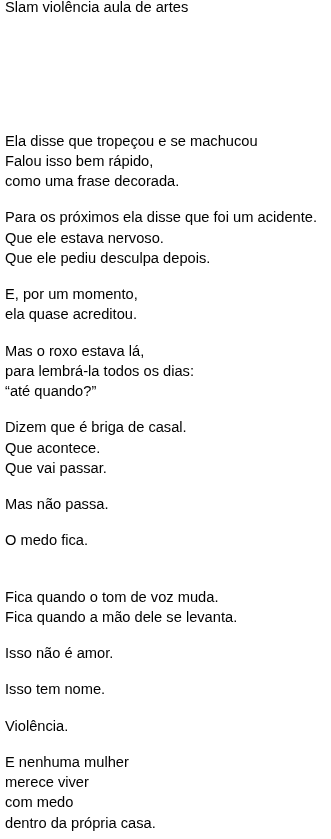
O contato com o slam ampliou nossa concepção de arte: percebemos que ela não precisa de suporte físico, moldura ou museu. A voz humana carregada de intenção já é arte em estado bruto.
"O slam nos ensinou que a nossa história, contada com nossa própria voz, é a obra mais autentica que podemos criar."
Cada integrante saiu com a percepção de que se expressar — mesmo de forma imperfeita — é um ato corajoso e necessário. O slam nos deu ferramentas para isso.
A arte do Egito Antigo é uma das manifestações artísticas mais longas e consistentes da história humana, desenvolvida ao longo de aproximadamente 3.000 anos (por volta de 3100 a.C. até 30 a.C., com a conquista romana). Ao contrário do que muitas vezes imaginamos, essa arte não era produzida para ser admirada esteticamente — ela tinha funções religiosas, políticas e funerárias bem definidas.
A civilização egípcia nasceu e floresceu às margens do rio Nilo, no nordeste da África. As cheias anuais do rio fertilizavam as margens e garantiam colheitas generosas em meio ao deserto — essa abundância relativa permitiu que os egípcios desenvolvessem uma sociedade complexa, com hierarquias, Estado centralizado, religião organizada e, claro, arte monumental.
No Egito Antigo, arte e religião eram inseparáveis. As obras não eram feitas para museus ou coleções — elas cumpriam funções rituais. Pinturas em tumbas garantiam que o morto tivesse na vida após a morte tudo o que tivera em vida. Estátuas de faraós serviam como "duplos" espirituais (os ka) que os deuses podiam habitar.
O faraó era considerado um ser divino — filho de Ra (deus do sol) e intermediário entre os deuses e os homens. Toda a produção artística egípcia girava, de alguma forma, em torno dessa figura. Representá-lo corretamente e eternamente era uma obrigação religiosa.
"No Egito, a arte não imita a realidade — ela a perpetua. Cada imagem tem o poder de existir para sempre."
A arquitetura egípcia — com suas pirâmides, esfinges, obeliscos e templos colunados — foi concebida para durar a eternidade. O uso de granito, arenito e calcário garantia monumentos que, de fato, atravessaram milênios. A orientação dos templos em relação ao sol e às estrelas revela o profundo conhecimento astronômico dos egípcios.
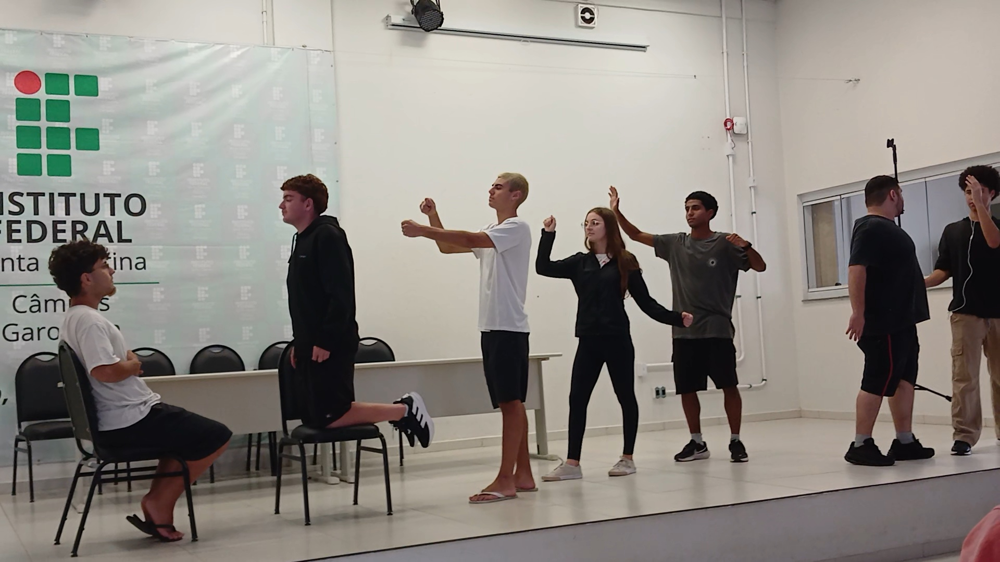
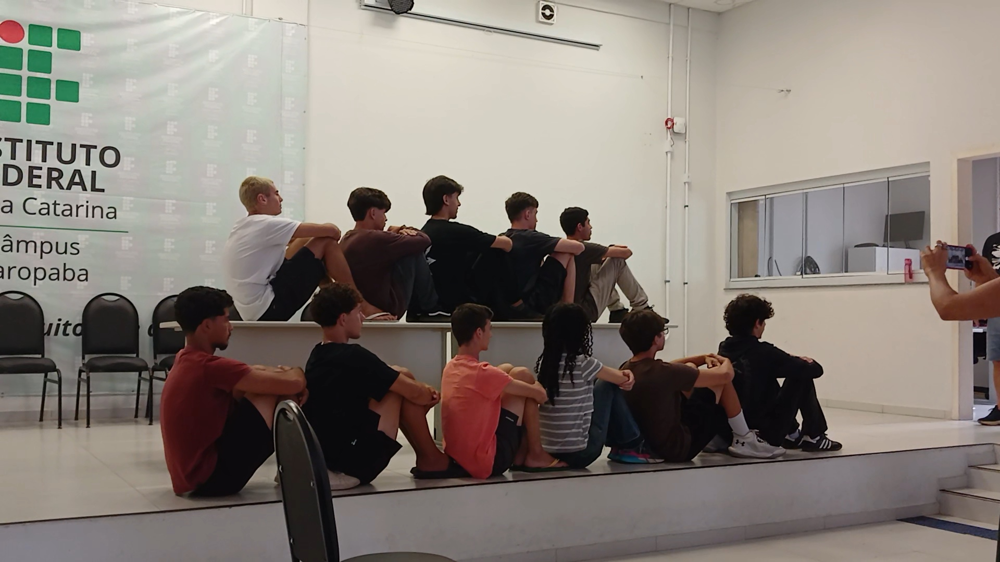
A arte árabe e islâmica é uma das mais ricas e complexas tradições visuais do mundo. Desenvolvida ao longo de mais de 14 séculos, ela abrange uma enorme diversidade geográfica — do Marrocos à Indonésia — e se caracteriza por elementos que a tornam imediatamente reconhecível.
O Islamismo surgiu na Península Arábica no século VII d.C., com o profeta Maomé. A proibição islâmica da representação de seres vivos — baseada na ideia de que só Deus pode criar vida — redirecionou o impulso artístico dos povos islâmicos para formas não figurativas: a geometria, a caligrafia e os padrões vegetais.
Mas longe de ser uma limitação, essa restrição gerou uma das mais sofisticadas tradições decorativas da história. Os artistas islâmicos descobriram padrões matemáticos que os ocidentais só formalizariam séculos depois — como as teselações de Penrose, encontradas em azulejos islâmicos medievais desde o século XIII.
"Enquanto a arte europeia medieval colocava Deus em forma humana, a arte islâmica buscou Deus na perfeição matemática do universo."
A imersão na cultura árabe e islâmica ampliou nossa percepção sobre diversidade cultural e artística. Percebemos que a arte não tem uma única linguagem universal — cada civilização desenvolve seus próprios códigos visuais, e aprender a lê-los é ampliar nosso repertório humano.
"A arte islâmica nos ensinou que beleza e precisão não são opostos — são parceiros. E que a fé pode gerar formas que a matemática admira."
Como grupo, saímos dessa unidade com maior respeito pela diversidade cultural e com a compreensão de que julgamentos estéticos são sempre culturalmente situados. O que nos parece estranho ou exótico à primeira vista esconde uma lógica sofisticada e uma tradição profunda.
O folclore reúne o conjunto de tradições, lendas, músicas, danças, festas, costumes e conhecimentos populares que são transmitidos de geração em geração, muitas vezes de forma oral. É um patrimônio vivo, que se transforma com o tempo, mas que carrega em si a memória de um povo.
A festa junina tem origem na Europa, ligada às antigas comemorações do solstício de verão, quando os povos celebravam a fartura das colheitas com fogueiras, danças e rituais agrícolas. Com a chegada do cristianismo, essas celebrações foram incorporadas ao calendário católico e passaram a homenagear três santos: Santo Antônio, São João e São Pedro, cujas festividades ocorrem em junho.
A tradição chegou ao Brasil durante a colonização portuguesa e, aos poucos, foi se misturando a elementos da cultura indígena e africana já presentes no país — o milho, por exemplo, um alimento típico das festas juninas, tem origem indígena. Assim, o que era uma festa europeia ganhou uma identidade genuinamente brasileira, com quadrilhas, comidas típicas, fogueiras e roupas caipiras.
"A festa junina é um exemplo perfeito de como o folclore se transforma: nasceu na Europa, mas só existe do jeito que conhecemos hoje por causa do Brasil."
Em Santa Catarina, a festa junina ganha um sabor próprio por causa da forte presença de imigrantes europeus que colonizaram o estado. As influências das culturas alemã, italiana, açoriana e polonesa se misturam à tradição junina de origem lusitana, criando festas com um caráter bem particular.
Esse encontro de tradições mostra como o folclore não é algo fixo: ele se adapta ao lugar onde é vivido, incorporando novos sabores, sons e histórias sem deixar de lado sua essência popular.
Participamos da organização e das apresentações da festa junina do campus, incluindo quadrilha, música ao vivo, cabine de fotos temática e produção de comidas típicas.
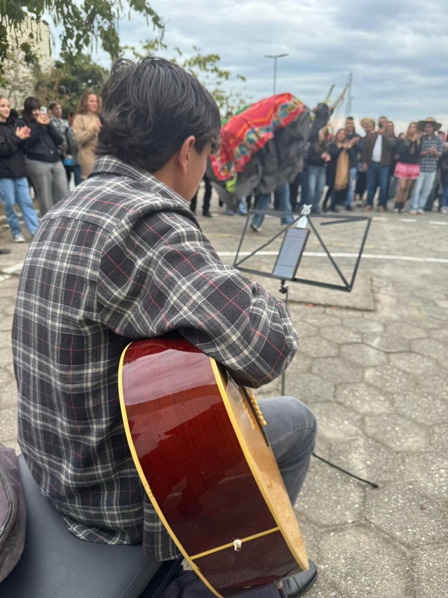
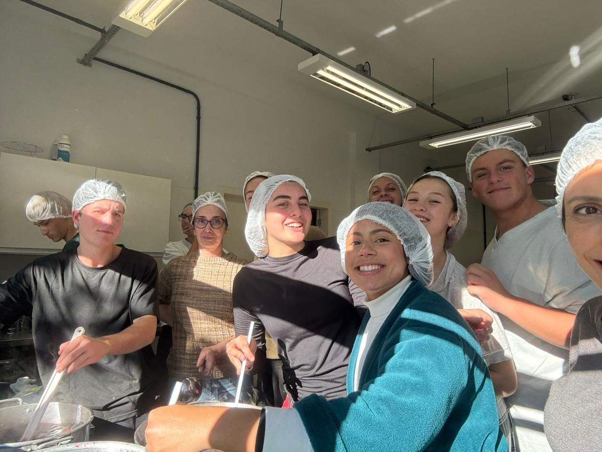
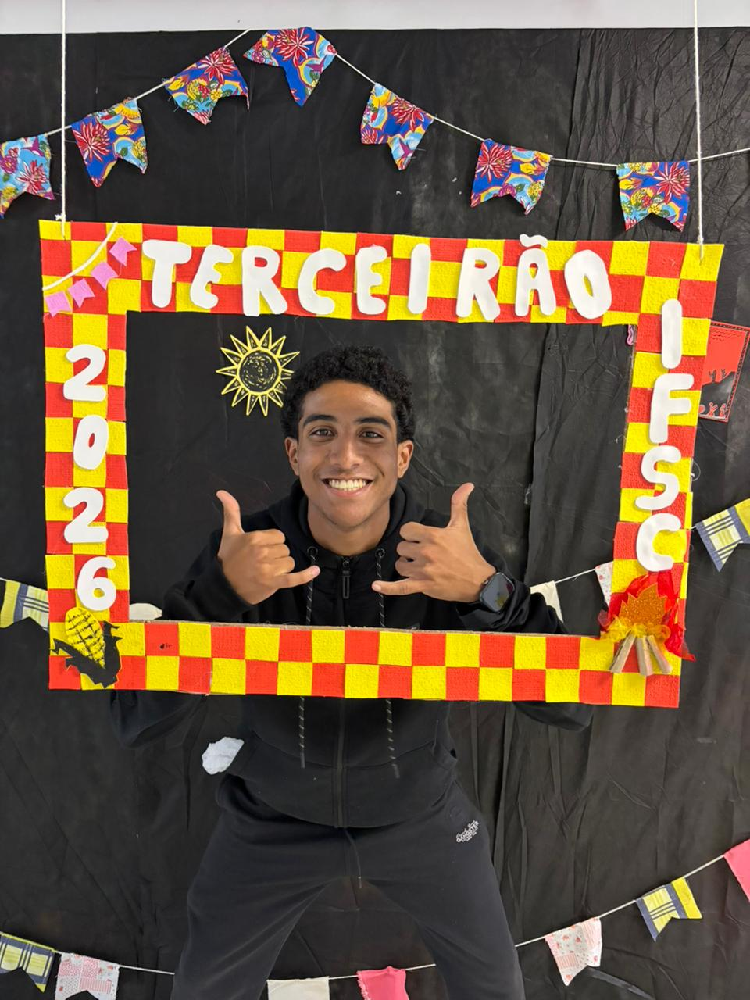
Organizar e viver a festa junina do campus nos aproximou de uma tradição que, mesmo sendo tão presente no calendário escolar, muitas vezes conhecemos apenas de forma superficial. Pesquisar sua origem e entender as particularidades da nossa região nos fez perceber o quanto o folclore catarinense é resultado de encontros — entre povos, entre culturas, entre gerações.
O folclore não é um museu parado no tempo. É uma festa viva, que cada comunidade recria à sua maneira, com seu próprio tempero.
Como grupo, saímos dessa vivência com mais orgulho da nossa cultura regional e com a certeza de que celebrar tradições populares também é uma forma de fazer arte.
Sustentabilidade é a capacidade de atender às necessidades do presente sem comprometer a capacidade das futuras gerações de atenderem às suas próprias necessidades. Trata-se de buscar um equilíbrio entre três pilares: o meio ambiente, a economia e a sociedade.
A ECOSURF é uma organização brasileira sem fins lucrativos, fundada em 2000 por um grupo de surfistas em Itanhaém, litoral de São Paulo. Desde então, atua na proteção dos oceanos, praias e zonas costeiras.
A ECOSURF atua por meio de coletivos e embaixadores espalhados em diferentes locais do Brasil. Um de seus principais projetos, o Missão Oceano, concentra suas ações no litoral centro-sul de São Paulo, realizando limpezas periódicas de praias, atividades de educação ambiental e coleta sistemática de resíduos sólidos.
Essas ações não se limitam à retirada do lixo: envolvem também a formação de voluntários, o engajamento de escolas e comunidades locais e a produção de dados sobre os tipos de resíduos encontrados, que ajudam a entender de onde vem a poluição costeira.
"Cada garrafa recolhida na areia é também um dado: ele mostra por onde e como o lixo chega até o mar."
Esse processo mostra que a limpeza de praias é só o primeiro passo de um ciclo maior: cada resíduo recolhido pode voltar à cadeia produtiva em vez de continuar poluindo o ambiente marinho.
"A parte que mais me chamou a atenção foi perceber que a ECOSURF vai muito além da limpeza das praias. Ela promove educação ambiental, incentiva mudanças de comportamento e mostra que pequenas atitudes podem gerar grandes impactos para a preservação dos oceanos. Também achei interessante como transforma resíduos em novos recursos por meio da economia circular."
A palestra da ECOSURF nos mostrou que sustentabilidade não é um conceito abstrato: ela se traduz em ações concretas, em números que podemos acompanhar e em escolhas cotidianas que, somadas, fazem diferença real para os oceanos.